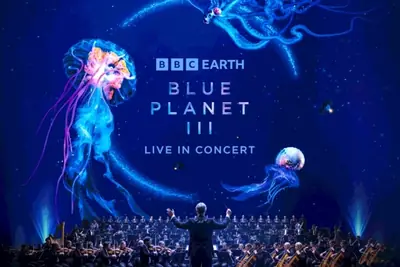
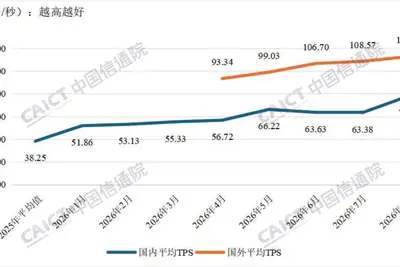
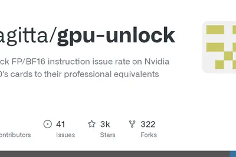
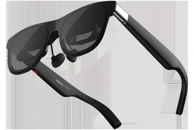
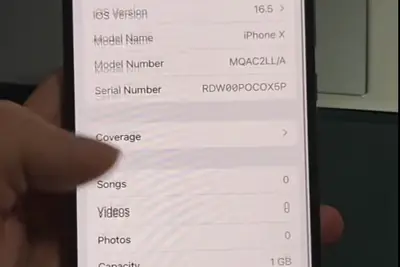
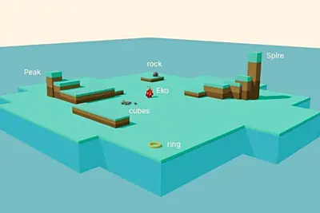
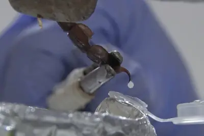
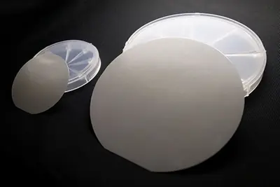
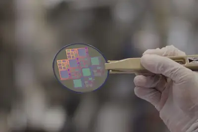

全部主題
IT之家 10 月 25 日消息，本周，PHP 曝出两处高危漏洞，全球随即紧急行动，保护网站免遭黑客攻击。这件事也让人们看到，这门已有三十年历史的开源编程语言，对互联网而言有多重要。 据估算，全球最高有约七成网站依托 PHP 搭建，但负责维护 PHP 的非营利基金会，经费却十分紧张。 PHP 基金会执行董事伊丽莎白 · 巴伦（Elizabeth Barron）在当地时间周五的邮件采访中表示：“我们只有一名全职员工，也就是我，另外还有十四名大多是兼职的外包人员。”基金会董事会成员都是无薪志愿者，资金来源依靠捐赠与资助。 IT之家注意到，基金会和外部研究人员
IT之家 10 月 25 日消息，英国广播公司（BBC）的《蓝色星球 3》纪录片打算保留那些不算完美的镜头，以此证明内容的真实性。该系列前作的标志性特点是画面精美、通透清晰，美得近乎不真实。而人工智能生成内容的一大破绽，就是画面过度精致、毫无瑕疵。为了避开这种观感，《蓝色星球 3》选择如实呈现，不刻意美化。 IT之家注意到，执行制片人伊丽莎白 · 怀特（Elizabeth White）此前接受《卫报》采访时提到，放在以往，水里漂浮的大量浮游生物之类的杂物，就足以让团队剪掉这段素材。或者他们会调整构图，把船只、浮标移出画面，又或是直接判定：“水质条件实在达

IT之家 10 月 25 日消息，英伟达已经上市一段时间的 GeForce RTX 30 系列（代号安培，Ampere）显卡，显然还有大量尚未释放的计算潜力。GitHub 用户扎吉塔（Zagitta）开发了一款名为 GPU Unlock 的开源新项目，可以解除安培架构显卡上部分人为设置的性能限制，在特定负载下，张量核心的计算吞吐量几乎可以翻倍，而且不需要修改英伟达驱动，也不用永久刷写显卡的 VBIOS。 IT之家注意到，这个项目专门针对一项指令发射速率限制：在使用 FP32 累加的 FP16/BF16 张量核心运算中，消费级安培显卡的运行速率相比专业卡更
台北市長選舉最近討論松山機場遷建打造 AI 園區的政策，首先要肯定實質政策的討論。這是一個值得討論的重大城市發展構想，但這個議題可能要把「松山機場遷移」與「台北發展 AI」分開成兩件事來討論與處理。無論有沒有 AI，松山機場存廢和遷移仍然可以討論。但即使松山機場不遷移，台北也不能因此停止發展 AI。 蓋 AI 園區之前，先釐清城市要發展哪幾層 AI 我們要更進一步思考的是：AI 發展真正稀缺的可能不只是土地，而是 AI 人才與各種生產要素的有效組合。從竹科到南科，台灣過去的產業發展，確實透過科學園區集結了大量企業、資本、人才與供應鏈，創造了舉世矚目的成就
BBC's Blue Planet III is looking to prove its authenticity by leaving in the less-than-perfect shots. Previous incarnations of the nature series were defined by their gorgeous, crystal-clear footage that seemed almost too good to be real. But one dead giveaway of AI is when thing
台大洪士灝團隊打造可在企業內網部署的IC設計專用AI引擎，降低機密外洩風險；另有產線瑕疵檢測、工控資安、胰臟癌早篩等，一次看台灣7大前瞻技術。
From Apple's repeatedly delayed Siri AI to OpenAI's messy "super app" launch, here's a look at the AI projects that shut down or missed expectations.
On Thursday, Pennsylvania Governor Josh Shapiro signed the Artificial Intelligence Deceptive Advertising Act into law, requiring disclosures on AI-generated ads. The law requires any ad - whether it's a still image, video, audio, or text - that "has been significantly modified or
Block said that the voice model can run locally on a MacBook M4 Max
IT之家 10 月 24 日消息，JBL 现已为旗下 JBL CLIPS 琉璃扣耳夹耳机新增“碧玺红色特别版”，首发价 1346 元，部分地区国补后低至 949 元。 京东 JBL CLIPS 琉璃扣“碧玺红色特别版” 1346 元 点此访问 这款耳机的充电盒、本体均采用半透明设计；搭载 11mm 动圈单元，定制驱动单元加载镀钛双层振膜；支持 SonicArc 定向投送技术，可减少漏音现象，保护用户隐私。 这款耳机支持 IP54 级防尘防水；单体重量 6.5g，采用 C 形桥设计，外部为柔性 TPU 材质，适配多种耳形；内置 4 个麦克风，支持 AI 通
A new study found Grok's AI overwhelmingly recommends Republican candidates while OpenAI's GPT favors Democrats, with the two AI models disagreeing in more than 90% of nearly 500 election races.
IT之家 10 月 24 日消息，据中国信通院，随着大模型技术的迅速迭代，词元（Token）服务成为从技术走向应用的关键点，我国日均词元调用量持续攀升，2026 年 6 月， 国内词元日均消耗量约 500 万亿 ，是 2025 年 12 月的近 4 倍。产业中越来越多的 MaaS（Model as a Service，模型即服务）平台厂商通过公有云 API 方式供给大模型词元服务。然而用户对词元服务性能缺乏直观的判断依据，且面临选型困难等各类问题。 为有效衡量服务性能，中国信息通信研究院（简称“中国信通院”）人工智能研究所、人工智能大模型及软硬件评测工业

We created a list of the most notable AI agents that can live in your text messages, from general assistants to agents designed for families, travel, and work.
Security researchers used AI tools to help uncover years-old vulnerabilities in the PHP web scripting language. Then the AI-assisted attacks began.
IT之家 10 月 24 日消息，近日有用户反馈称 Anthropic 旗下 Claude 的升级支付页面出现了新的地区选项变化。 IT之家实测发现，中国大陆及港澳台地区已出现在付款页面中，支付入口也已支持绑定中国银联卡。 与此同时，社交平台和开发者社区有用户称，此前被永久封禁的 Claude 账号可以提交申诉，且已有个别用户反馈申诉成功。关于这一点，IT之家暂无法核实。 值得一提的是，Claude 支付页面出现中国地区选项，并不等于 Anthropic 已全面开放相关地区的服务。截至目前，Anthropic 官方帮助中心仍要求用户位于其支持的地区才能使
IT之家 10 月 24 日消息，据 36 氪今日报道，字节跳动内部近期完成了一次业务整合，AI 短剧创作平台小云雀并入智能创作平台即梦，产品仍保留独立入口。 此次调整以资源整合为主，即梦已经接入小云雀的短剧相关能力。调整后，小云雀的运营由即梦运营和市场负责人陈欣然负责，产品团队没有变化。 小云雀和即梦均出自字节剪映团队。小云雀定位为一站式 AI 内容创作平台，今年 3 月上线短剧 Agent，支持上传最多 10 万字剧本、一键生成视频成片，搭载了字节自研的 Seedance 2.0 模型，在短剧、漫剧的标准化生产场景中具备从剧本解析到分镜生成的完整流程
Article URL: https://github.com/Zagitta/gpu-unlock Comments URL: https://news.ycombinator.com/item?id=50219700 Points: 169 # Comments: 61

IT之家 10 月 24 日消息，XREAL 10 月 16 日在海外发布了新款 AR 眼镜 XREAL 1 Pro+，主要提升面板亮度，同时调整人体工程学设计，目前该机国行版本已在京东上架， 定价 3499 元 ，10 月 27 日发售。 京东 XREAL 1 Pro+ 智能眼镜 3499 元 直达链接 XREAL 1 Pro+ 采用重新设计的鼻托结构，旨在改善眼镜与面部的贴合度，提升长时间观看时的舒适性。其搭载双 0.55 英寸索尼 Micro-OLED 面板，峰值亮度最高可达 1200 尼特，较前代产品的 700 尼特明显提升。 除了更高的峰值亮度

IT之家 10 月 24 日消息，捷途汽车宣布为旗下捷途山海 L7 PLUS 1.5L C-DM 智驾版新增“220KM 五座智享精英版”和“220KM 五座激光雷达豪华版”， 指导价分别为 14.99 万元和 15.99 万元 ，超级置换政策后售价分别为 13.99 万元和 14.99 万元。 系列车型继续延续现款车型的设计风格，星环式贯穿灯组搭配两侧 J 字形造型勾勒，封闭式前格栅搭配下方梯形进气口。车身采用半隐藏式车门把手搭配密辐式轮圈，提升车辆精致感。车尾采用贯穿式尾灯组，与车头形成视觉呼应。 该车采用 10.25 英寸全液晶仪表 +15.6 英
IT之家 10 月 24 日消息，随着 AI 技术突飞猛进，许多开发者在大模型辅助加持之下对各种老旧机型进行折腾，先前便有 开发者为小米 Redmi Note 12 4G 手机刷入 iOS 系统，并开源了项目 。 IT之家注意到，目前又有开发者 Yanei 发布视频，展示其成功为一部小米 8 手机刷入 iOS 16.5 系统，参考其发布的视频，可以看到该开发者将设备机型伪装为 iPhone X，系统元素在小米 8 手机上呈现良好。 该网友在视频简介和评论区中表示，小米 8 和当年的 iPhone X 真的太像了，运行起来颇有当年的感觉，最初 GPU 存在

麻省理工學院（MIT）計算機科學與人工智慧實驗室（CSAIL）一項研究顯示，當 AI 代理人被放進封閉的虛擬環 […]

一支幾乎沒有科學背景的五人團隊，在 Anthropic 的協助下完成一項引人注目的蛋白質設計實驗：他們讓 AI […]

PC 模組社群再度突破 NVIDIA 專有技術的使用邊界。開發者 danielblnc 近日釋出 DLSS-N […]
美國持續擴大本土功率半導體及關鍵材料布局。美國商務部宣布，依據《晶片與科學法案》（CHIPS and Scie […]

美國能源部（DOE）布魯克黑文國家實驗室（Brookhaven National Laboratory）19 […]

AI 新創公司 Goodfire 的研究員 Nick Cammarata 近期發表一篇長達 2.6 萬字的部落 […]
Release: battledrones v14: Compass Rose, a four player map I added four player online mode to Battledrones - previous maps were limited to two. Here's the initial prompt I used: Add a new map for a four player battle - four way rotational symmetry, up to four AI players, works wi